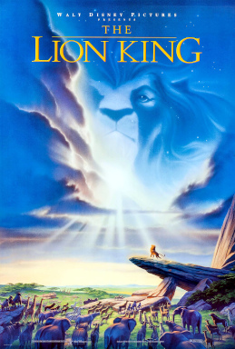

The Lion King is a 1994 American animated musical drama film directed by Roger Allers and Rob Minkoff produced by Walt Disney Feature Animation and released by Walt Disney Pictures.
The “Circle of Life” opening scene was the first time Disney had ever made a trailer using a complete scene.
It is the 32nd Disney animated feature film and the fifth film produced during the Disney Renaissance.
What the film is about
Taking place in a kingdom of lions in Africa, The Lion King tells the story of Simba, a young lion who is to succeed his father, Mufasa, as King of the Pride Lands; however, after Simba's paternal uncle Scar kills Mufasa to seize the throne, Simba is manipulated into thinking he was responsible and flees into exile. After growing up in the company of the carefree outcasts Timon and Pumbaa, Simba receives valuable perspective from his childhood friend, Nala and his shaman, Rafiki, before returning to challenge Scar to end his tyranny and take his place in the Circle of Life as the rightful King.
Click here to find out more.